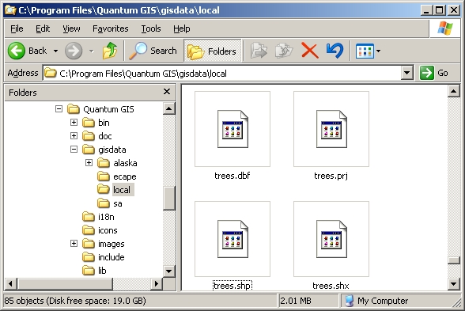
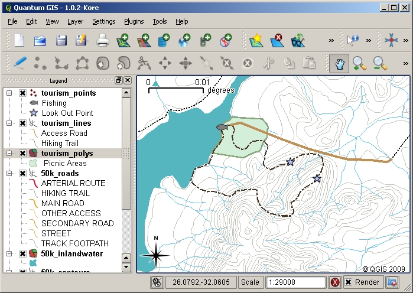
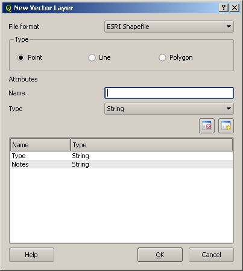
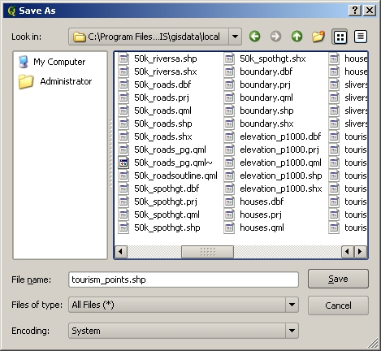
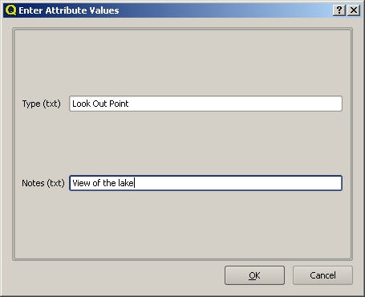
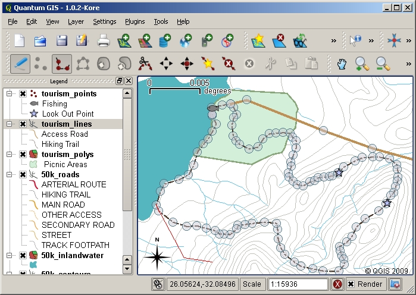
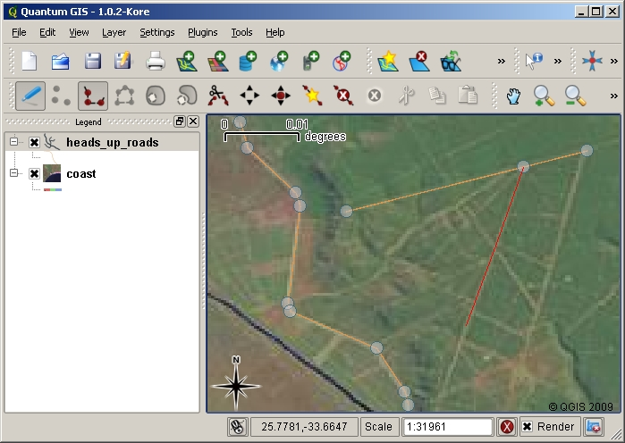
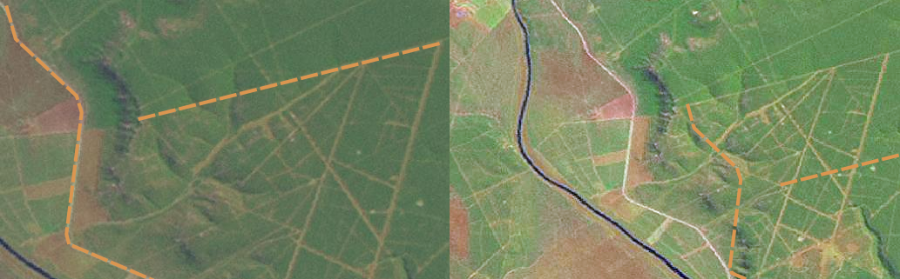

Събиране на данни¶
Преглед¶
В предишните две глави обяснихме двете най-основни концепции при векторни данни - тяхната геометрия и техните атрибути. Геометрията описва формата и местоположението на обекта, а атрибутите описват неговите свойства (цвят, размер, възраст и т. н.).
Но досега работихме с вече събрани данни, време е да създадем свои векторни слоеве.
Как се съхраняват ГИС данните в цифров вид?¶
При компютърните системи различните програми имат специфични файлови формати, с които могат да работят, всеки със свое собствено файлово разширение. Например при програмите за текстообработка (LibreOffice Writer, Microsoft Office Word) най-честите файлови разширения са .odt, .doc или .docx, за изображения са .jpg или .png, за музика са .mp3 и т.н. Файловият формат е начинът, по който се организира информацията в самия файл (едно и също изображение записано в JPEG формат има различна организация на байтове спрямо PNG формат). В същото време файловото разширение е просто конвенция, която подсказва на потребителите и на другите програми какъв формат данни да очакваме вътре във файла. За да не изпадаме в подробности, разликата между двете понятия ще бъде пренебрегната и в това ръководство понятията файлов формат и файлово разширение ще се използват взаимнозаменяемо.
ГИС програмите не правят изключение и те също работят с ограничен набор файлови формати, като повечето от тях могат да бъдат четени, създавани и редактирани. Въпреки че използвахме израза “ораничен брой”, всъщност се поддържат над 40 файлови формата, всеки със своите специфики. Най-разпространените от тях са GeoPackage с разширение .gpkg и ShapeFile с разширение .shp. Макар ShapeFile да беше доминиращ допреди няколко години в индустрията, той страда от редица технически недостатъци и ограничения, което го прави неадекватно решение през третото десетилетие на века и GeoPackage е форматът, който е за предпочитане при нови проекти.
| Разширение | Описание |
|---|---|
.shp |
Геометрията на обектите се записва тук. |
.dbf |
Атрибутите на обектите се записва тук. |
.prj |
Данни за проекцията се записва тук. |
.shx |
Този файл съдържа индекса на векторния слой. Индексирането спомага за по-бързото откриване на обекти от ГИС програмите. |
Таблица ShapeFile: Основните файлове, които са необходими при ShapeFile форматът. Всички файлове, които са част от един ShapeFile слой имат едно и също име и се намират в една и съща директория.
Един от основните недостатъци на ShapeFile като файлов формат е многофайловата му природа. Така един ShapeFile всъщност се състои от поне три файла в една и съща директория, с едно и също име, но с различни файлови разширения (.shp, .dbf и .shx). Важно е винаги когато споделяме пространствени данни в този формат да включим всички файлове, затова и ShapeFile-овете най-често се разпространяват като .zip архив, който съдържа тези три файла.
trees записан като ShapeFile.
Много ГИС програми позволяват съхранението на пространствена информация в специализирани сървърни бази данни (напр. PostgreSQL/PostGIS, MySQL, MS SQL, Oracle и т. н.). В този случай данните не се записват в отделен специален файл, който може всеки да копира и разпространява, ами сървърната база данни съхранява обектите по специален за него начин, който е оптимизиран за бързо четене и писане. Поради тази причина този начин на съхранение се използва за по-големи и трайни масиви от данни, тъй като е много по-бърза и ефективна работата по този начин, като основния недостатък е привнасянето на известна сложност при работа с ГИС. Именно поради тази сложност и въвеждащия характер на това ръководство, ще оставим работата със сървърни бази данни намира.
План¶
Преди да създадем нов слой, трябва да сме наясно каква геометрия желаем да съхраняваме в него (точка, линия или полигон) и какви атрибути ще се съдържат. Нека погледнем няколко примера в детайл, за да стане по-ясно.
Пример 1: Карта на туризма¶
Представете си, че трябва да създадете туристическа карта за областта, в която живеете. Крайната цел е карта в мащаб 1:100 000, където потенциалните туристически обекит са отбелязани. Първо трябва да помислим за геометрията. Какво ще се съдържа в нашата карта? С точки можем да обозначим конкретни обекти като паметници, чешми, музеи, панорамни гледки и пр. С линии пък можем да обозначим екопътеки, реки и др. За полигоните остават обекти с големи площи, като защитени територии, пясъчни дюни, архитектурни резервати и пр.
Както може да се види, не винаги е напълно ясно какъв вид геометрия е подходящо да използваме. Понякога е подходящо да създадем по повече от един слой с различна геометрия, за да опишем един и същи вид геометрия. Например р. Дунав или р. Марица са прекалено широки, за да бъдат описани просто с линия и понякога е подгодящо да се опишат като полигони. По този начин островите по тях могат да бъдат изобразени вътре в тях. За останалите по-малки притоци, линиите най-често са напълно подходящи.

Пример 2: Речни проби¶
Ако искаме да измерим нивата на замърсяването по поречието на река, ние трябва да вземем проби от нея през определен интервал по нейното течение и да измерим различни индикатори като нивото на кислород, наличието на колиформни бактерии, турбулентността на водата, киселинност и др. За всяка проба трябва да запишем координатите, от които са взети.
За да визуализираме това в ГИС, ще трябва да създадем нов точков слой ``. Използването на точков слой е разумно в случая, защото пробата се взема от много конкретно местоположение по поречието.
Полетата на подобен слой с проби биха били отделна колона за всеки индикатор, който изследваме.
| № | pH | кислород | Колиформи | Турболентност | Автор | Дата |
|---|---|---|---|---|---|---|
| 1 | 7 | 6 | не | Ниска | Стамат | 12/01/2009 |
| 2 | 6.8 | 5 | да | Средна | Драгой | 12/01/2009 |
| 3 | 6.9 | 6 | да | Висока | Ценка | 12/01/2009 |
Таблица атрибути речни проби: Създаването на подобна таблица преди същинското създаване на слоя ще ни ориентира какви полета ще са необходими за новия векторен слой. Самото местоположение на пробата не е в таблицата, защото в ГИС то се съхранява на отделно място.
Създаване на празен векторен слой¶
След като имаме конкретна представа какви обекти ще слоеве ще трябва да създадем в ГИС можем да пристъпим към реализацията им.
Има различни начини за създаване на нов векторен слой, но ще обхванем най-общия вариант, при който първоначално ще създадем слой чернова, а впоследствие ще запишем перманентно данните на диска. Важното в този случай е, че може да има леки
The process usually starts with choosing the 'new vector layer' option
in your GIS Application and then selecting a geometry type (see
figure_new_shapefile). As we covered
in an earlier topic, this means choosing either point, polyline or
polygon for the geometry.
::: {#figure_new_shapefile}

Next you will add fields to the attribute table. Normally we give field names that are short, have no spaces and indicate what type of information is being stored in that field. Example field names may be 'pH', 'RoofColour', 'RoadType' and so on. As well as choosing a name for each field, you need to indicate how the information should be stored in that field –-- i.e. is it a number, a word or a sentence, or a date?
Computer programs usually call information that is made up of words or sentences 'strings', so if you need to store something like a street name or the name of a river, you should use 'String' for the field type.
The shapefile format allows you to store the numeric field information as either a whole number (integer) or a decimal number (floating point) –-- so you need to think before hand whether the numeric data you are going to capture will have decimal places or not.
The final step (as shown in figure_save_shapefile{.interpreted-text
role=”numref”}) for creating a shapefile is to give it a name and a
place on the computer hard disk where it should be created. Once again
it is a good idea to give the shapefile a short and meaningful name.
Good examples are 'rivers', 'watersamples' and so on.
::: {#figure_save_shapefile}

Let's recap the process again quickly. To create a shapefile you first say what kind of geometry it will hold, then you create one or more fields for the attribute table, and then you save the shapefile to the hard disk using an easy to recognise name. Easy as 1-2-3!
Добавяне на данни във векторен слой¶
до момента само създадохме празния векторен слой. Сега ще позволим редакцията на слоя и добавянето на нови обекти. В повечето ГИС програми словете не могат да бъдат редактирани без изрично да се влезе в режим на редакция, с цел предпазване от случайното изтриване или променяне на съдържанието на слоя. След като влезем в режим на редакция, можем да започнем добавянето на нови данни. Добавянето на всеки един нов обект се състои от две стъпки:
- Изчертаване на геометрията.
- Попълване на атрибутивната форма.
Процесът на изчертаване на геометрията са леко различава според вида геометрия (точка, линия или полигон). След като приключим изчертаването на геометрията излиза диалогов прозорец с формата за попълване на атрибутите на новосъздадения обект. В случай, че нямаме информация или не сме сигурни в стойността на някой от атрибутите, обикновено можем да остави полето празно. Важно е обаче да се знае, че прекомерно честото възползване от тази свобода създава практически безполезен векторен слой, затова трябва да попълването на всичко възможно е изключително важно.
А сега да разгледаме изчертаването на геометриите в QGIS според вида им. Като начало трябва да активираме режима за редакция, като най-лесно това става или от контекстното меню на слоя, или от лентата с инструменти като натинем Toggle Editing  , за да влезем в режим редакция.
, за да влезем в режим редакция.
Изчертаване на точка¶
За изчертаването на точка, първо трябва да позиционираме картата и да приближим достатъчно, за да може да отбележим с максимална географска точност местоположението на точката. След като знаем точо къде искаме да поставим новата точка, натискаме веднъж с ляв бутон на мишката, където желаем да се появи новата точка. Това ще предизвика QGIS да създаде геометрията на новата точка и да покаже нов диалогов прозорец с атрибутивната форма, в която да въведем стойностите на атрибутите за новосъздадената точка. Ако междувременно се откажем от новата точка, винаги може да изберем Cancel, което ще премахе и новоизчертаната геометрия.

Изчертаване на линия¶
Цифроването на линия също включва позиционирането на картата на мястото на първата точка. Не забравяйте приближението на картата да съответства на мащаба на бъдещата карта. За да добавим първата точка от линията, избираме инструмента за добавяне на линия Add Polyline Feature и започваме да натискаме с ляв бутон по картата, за да създаваме отделните вертекси на геометрията. След първото натискане се забелязва линия, която свършва в курсора и започва от последно добавения вертекс, подобно на разтягащо се ластиче.

Когато приключим с изчертаването на линия и не искаме да добавяме нови вертекси, натискаме десен бутон, при което QGIS ни показва атрибутивната форма. След като атрибутивната форма се появи, процедурата за завършване на цифроването е същата като при точковите обекти.
Изчертаване на полигон¶
Процесът на изчертаване на полигон е почти същия като изчертаване на линия, с тази разлика че бутона за добавяне на нов обект лентата с инструменти е различан и се казва Add polygon. Освен това по време на изчертаването се вижда площта на бъдещия полигон.
Край на цифроването¶
За да добавите нов обект, просто трябва да натиснете върху картата отново и да повторите процеса отначало.
След като добавим всички желани обекти, трябва да излезем от режима за редакция за да не повредим новосъдадените данни. Това се случва като повторно натиснем Toggle Editing  на лентата с инструменти.
на лентата с инструменти.
Цифроване върху основа (Heads-up digitising)¶
Очевидно добавянето на нови обекти “на сляпо” е доста трудно и се нуждаем от някакъв географски ориентир върху която да градим нашите пространствени данни. Най-често се поставя основен растерен слой от птичи поглед на района, било то спътникова или въздушна снимка на района. Този слой може да бъде използван като ориентир или дори собственоръчното откриване на видимите обекти от изображението (напр. горски просеки, поляни, неузаконени сгради и др.). Този процес е известен като цифроване върху основа.

Автоматично извличане на обекти¶
Възможно е нови слоеве и обекти да бъдат създавани автоматично с по-прости и по-сложни компютърни алгоритми от вече съществуващи векторни или растерни слоеве. Например могат автоматично да бъдат извлечени границите всички водни повърхности от от спътникова или въздушна снимка. Или от линеен слой с границите на общините да се създаде нов полигонен слой на общините. Възможно е дори от свободен текст (имейли, публикации в социалните мрежи) да се създадат отделни векторни обекти с помощта на сложни алгоритми, най-често представяни като “изкуствен интелект”. Тези случаи са малко по-сложни от целевата група на това ръководство, затова няма да бъдат разгледани в подробности.
След края на цифроването…¶
След като цифроваме всички необходими обекти, можем да използваме знанията от предходните глави, за да зададем подходяща симвология. Изборът на правилна симвология ще спомогне за доброто комуникиране на информацията, която сме събрали.
Препъникамъчета¶
Много е важно ако използваме растерен слой като картна основа, той да бъде напълно коректно геореференциран. Правилно геореференциран слой е този, който показва показва данните точно на мястото, което съответства с модела на Земята в ГИС програмата. Т.е. ако виждаме аерофотоснимка на община Карлово и цифроваме обектите на такава основа, да сме сигурни, че ГИС програма не възприема и визуализира изображението на територията на община Чирпан.

Важно е да напомним ролята на мащаба при цифроването на нови обекти. Както вече коментирахме в предишните глави, би било лоша идея да цифроваме векторни обекти при мащаб 1:1 000 000, ако крайната карта ще бъде в мащаб 1:50 000.
Какво научихме?¶
- Цифроването е процесът на събиране на данни за геометрията и атрибутите на обект в цифров формат, записан на компютърно устройство.
- ГИС данни се записват в някакъв вид база данни, като най-често базата данни е самостоятелен и самодостатъчен файл.
- Един от често използваните формати в миналото е ShapeFile, който всъщност се състои от поне три файла (
.shp,.dbfи.shx), които притежават едно и също име, но различно файлово разширение. Тези файлове не могат да работят самостоятелно и винаги се копират в група, като задължително трябва да се намират в една и съща директория. - Преди да се създаде нов векторен слой, трябва да знаем каква геометрия и какви атрибути ще съдържа той.
- Атрибутите могат да бъдат цели числа (integer), числа с плаваща запетая (float, decimal), низове (стригове, string, text), дати (date, datetime) или двоични стойности (булеви стойности, boolean).
- Процесът на цифроване се състои от изчертаване на геометрията и попълване на стойностите на атрибутите. Този процес се повтаря за всеки отделен обект.
- Често по време на цифроването се използва картна основа, която да ни помага при ориентирането на картата.
- Изчертаване върху основа използва растерно изображение за фон, чрез който се ориентираме къде да поставим новите обекти.
- Създаването на нови обекти е възможно и посредством алгоритмична обработка на вече съществуващи векторни или растерни данни, или дори интерпретацията на свободен текст.
Практика!¶
- Помисли за списък от обекти в квартала, които смяташ за интересни. Например - границите на двора на имота, местоположението на улични стълбове, хидранти, разположението на сградите, пътеките. Опитай се обектите да имат от трите основни вида геометрия. За всяка група обекти трябва да има поне няколко атрибута, които го описват. Задай подходяща симвология, така че картата да бъде лесноразбираема. Ако сте група от учещи се на ГИС, разделете се на групи и накрая обединете събраните слоеве в един проект.
- Съберете данни от квартала, като запишете координатите, типа и други атрибути на всеки открит боклук, който не са на отреденото им място, било то хартийка, фас, опаковка и т.н. За всяка категория боклук добавете правилната симвология. Откривате ли някоя част, в която има притеснително струпване на отпадъци? Как ГИС ви помогна да ги откриете? Имате ли обяснение за струпването на боклуците именно там?